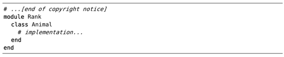

）。但如果现在就运行:argdo normal @a的话，将会出现副作用。
）。但如果现在就运行:argdo normal @a的话，将会出现副作用。技巧69在一组文件中执行宏
到目前为止，我们所关注的任务都是在相同的文件中用宏执行重复操作，但是，我们也可以跨文件回放宏。这一次，我们仍将考虑如何以并行或串行方式执行宏。
让我们从一组文件开始讨论，它们的内容都类似于这样：
我们将把这个类封装为一个模块，使它最终看起来像这样：

准备工作
为了重现本节中的例子，请先加载以下配置：
我们已在运行‘:argdo’或‘:bufdo’前，启用‘hidden’设置中针对‘hidden’选项进行了深入的讨论。
如果你想跟着做的话，请参考下载本书中的示例，我们要处理的文件在目录
code/macros/ruby_module中。
建立目标文件列表
首先，为这组要处理的文件建立一个文件列表。我们将用参数列表记录这些文件（更多细节，请参见技巧37）：
➾:cd code/macros/ruby_module
➾:args *.rb
不带参数运行:args命令，就可以显示参数列表中的内容：
➾:args
《 [animal.rb] banker.rb frog.rb person.rb
而通过使用:first、:last、:prev以及:next命令，可让我们浏览整个文件列表。
录制宏
在开始工作之前，首先要确保光标已经位于参数列表中的第一个文件中：
➾:first
现在让我们录制一个宏来完成所需的工作：
这些文件的开头部分都撰有版权声明，因此，我们必须小心地处理光标的初始位置。首先，我们输入gg使光标移到文档的起始位置，然后，再执行 /class <CR>使光标跳至首次出现“class”的地方。在完成这些准备工作之后，我们就可以进行修改了。
首先，用O命令在光标位置之上新创建一行，然后，插入新文本。接下来，移动光标至下一行，用>G命令对从这里到文件结尾的每一行进行缩进。最后，按G跳到文件结尾，再用o命令在光标位置之下新创建一行，并插入关键字end。
如果你正在使用编辑器跟着做，请先别急着运行:w保存文件，为什么呢？谜底将马上揭晓。
以并行方式执行此宏
:argdo命令允许我们对参数列表内的所有缓冲区执行一条Ex命令（参见:h :argdo）。但如果现在就运行:argdo normal @a的话，将会出现副作用。
请仔细想一想，运行:argdo normal @a将对参数列表内的所有缓冲区执行我们刚录制的宏，当然也包括那个在录制宏时被修改的文件。因此，第一个缓冲区的内容将被两次封装于同一个模块中。
为了避免此类问题，我们将执行:edit!，放弃针对第一个缓冲区所做的所有修改（参见:h :edit!）。
➾:edit!
如果你所做的修改已经保存至文件，那么执行:edit!将起不到任何作用。在这种情况下，你只能重复使用u命令直到恢复成原样。
现在，我们可在参数列表的所有缓冲区内执行宏了：
➾:argdo normal @a
尽管该技术需要进行一些设置，但它用一条命令就能为我们做很多工作。现在让我们看看怎样改造这个宏，从而使其以串行方式执行。
以串行方式执行宏
宏通常被用于在单一的缓冲区内执行单一的工作单元。如果想使其在多个缓冲区内运行，可在宏的最后附加一个步骤：跳转至列表中的下一个缓冲区（参见表11-3）。
虽然我们可以运行3@a，让宏在缓冲区列表余下的每个文件中得以执行，但是，次数没必要那么精确。这是因为，宏一旦执行到参数列表的最后一个缓冲区，:next命令将会失败，宏将中止退出。所以与其指定一个精确的数值，倒不如保证数字足够大。22这个数字就可以，而且很容易输入。
表 11-3 —— 以串行方式执行宏
保存所有文件的改动
我们已经修改了4个文件，但是一个也没保存呢。运行:argdo write可保存参数列表中的全部文件，但如果简单地运行以下命令的话，会更快：
➾:wall
注意：该命令会保存缓冲区列表内的所有文件，因此，它不完全等同于:argdo write（参见:h :wa）。
另一条有用的命令是:wnext（参见:h:wn），它等同于先运行:write，再运行:next。如果你想用串行的方式，在参数列表的多个文件上执行宏的话，可能更愿意用这条命令。
结论
假设宏执行到位于参数列表的第3个缓冲区时，因为某种情况失败了。如果此时使用的是:argdo normal @a命令，只有失败的缓冲区会受到影响；不过，如果我们以串行、带次数的方式执行宏的话，它将会中止执行，而参数列表中余下的文件将不会被修改。
我们在技巧67中就遇到过这种情况，但这一次稍有不同。当我们在一连串文本行上执行相同的任务时，只需瞥一眼就可以对所有情况了如指掌，一旦有什么地方出了岔子，一眼就能看出来。
而这一次，我们在一组文件上工作，因此无法达到“只需瞥一眼就可以对所有情况了如指掌”的程度。如果我们以串行方式执行宏的话还好，一旦失败，便会在出错的地方停下来。但如果我们以并行方式执行宏，一旦失败，我们不得不浏览整个参数列表，以便找到那个出错的缓冲区。
以并行方式运行的宏，虽然可能会更快地完成工作，不过当有错误发生时，会遗漏有用的信息。